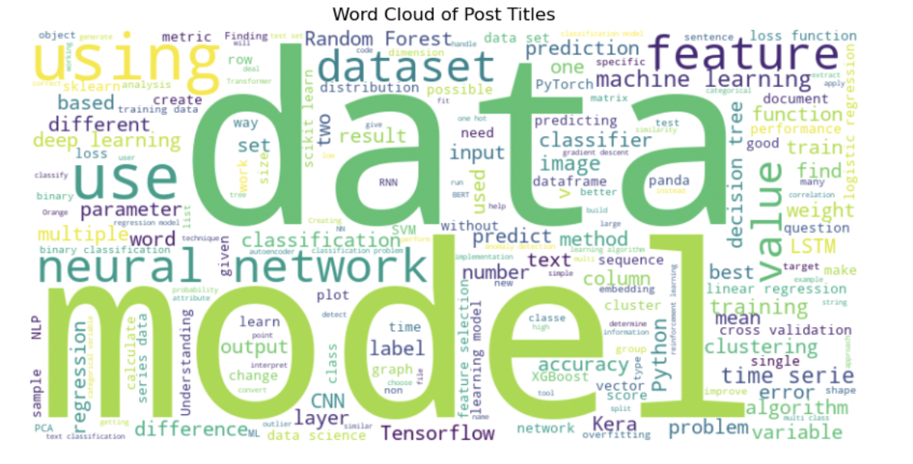
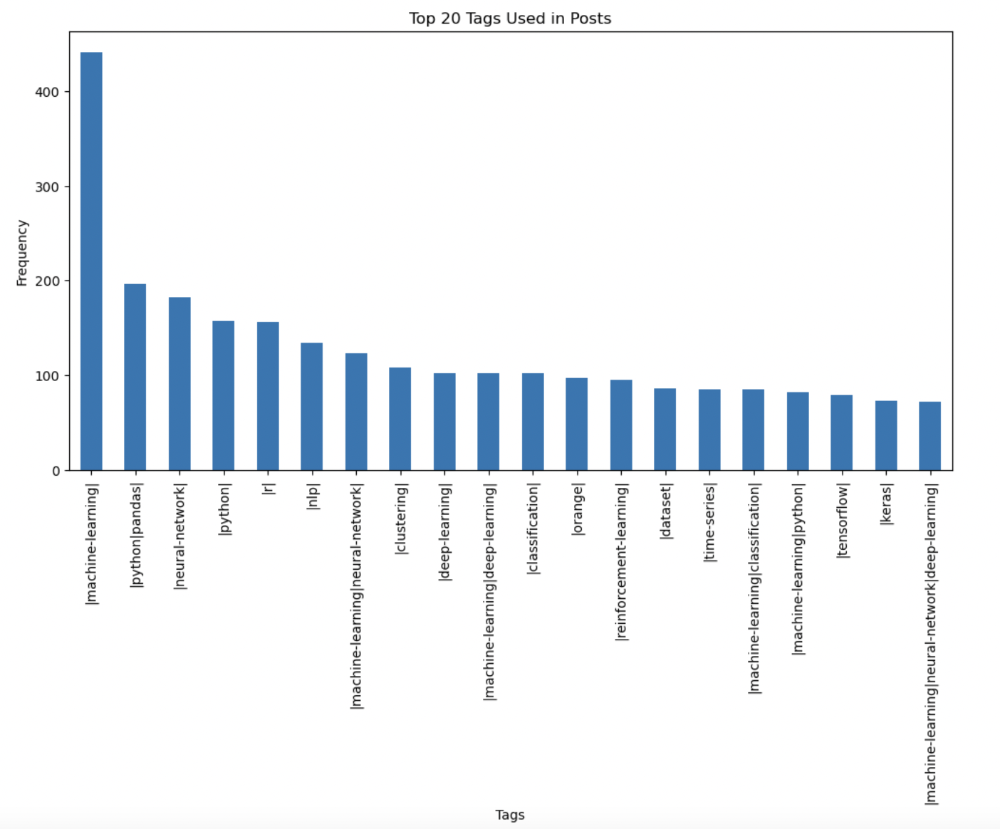
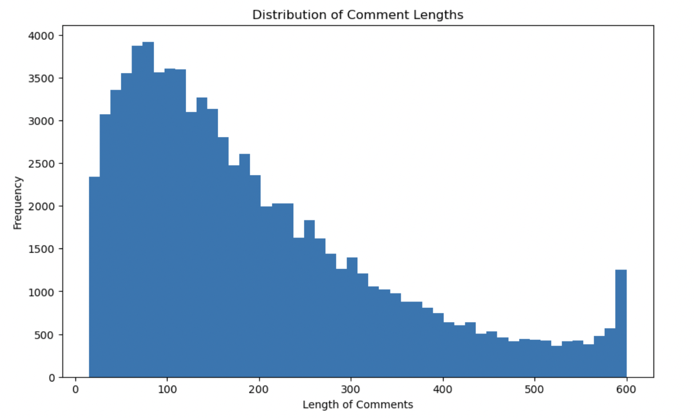
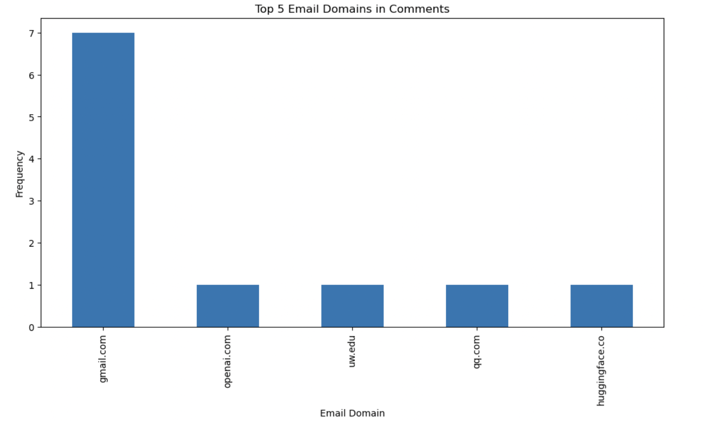
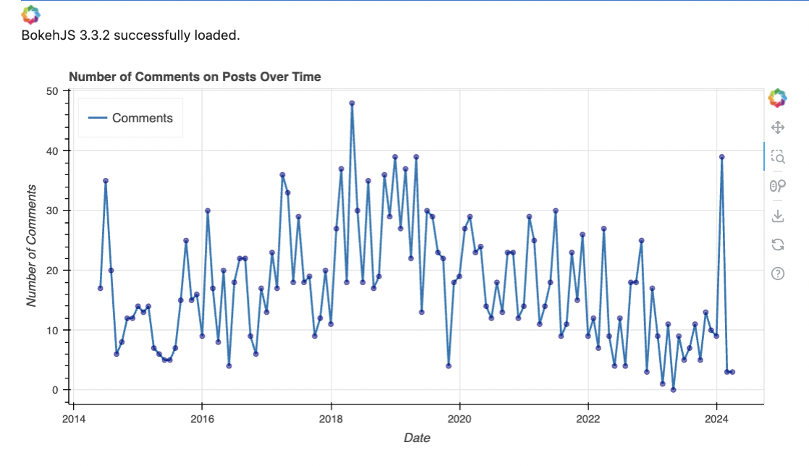

Introduction
This report presents an analysis of the Data Science Stack Exchange site using the most recent data dump. The goal is to gain insights into the data, with a focus on text extraction and visualization. We will be additionally using regex patterns to extract the necessary data.
The notebook containing the analysis can be found here.
A detailed instuction page on how to access the data dump can be found here.
Analysis
Wordcloud on titles of posts
The first plot is to find the most repetitive words in titles among the posts that have been posted throughout. We will bw doing this with the help of 'wordcloud' package.
Top tags used in posts
For the next part, we are going to analyse the tags of the posts data. A little pre-processing is required to remove the tag elements and to analyse them.
The most used tags in posts are "Machine learning", "Pandas" amd "Python".
Length of comments distribution
For the next plot, we will analyse how many characters are usually used to make comments in a post
Different email domains used in the posts
In this part, we will check the top 10 email domains that are present in the comments. This requires a little pre-processing. We wil be using regex pattern to match the email address domain and retrieve them for analysis.
Table to filter posts based on keywords
Next, we will create a table that shows details such as title of the post, author of the post and user's reputation score.
Number of Comments over the year
We will plot the number of comments over the time (monthly) to view when we have received a lot of comments and try to bring out some patterns. The following Python code uses Bokeh to create an interactive time series plot of the number of comments on posts containing specific keywords (data science or machine learning) in their titles.
